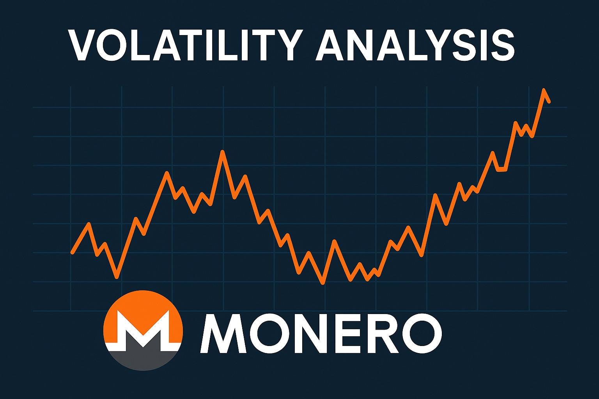

Monero Price Prediction for End of 2025: In-Depth Analysis and Insights
The information in this article is provided for educational purposes only and is not investment advice. Cryptocurrency investments carry risks.
Introduction
As of August 20, 2025, 01:14 AM EEST, Monero (XMR) is trading at approximately $261.85, solidifying its position as the leading privacy-focused cryptocurrency. Launched in 2014, Monero uses advanced cryptographic techniques like RingCT, stealth addresses, and decoy outputs to ensure untraceable transactions, making it a preferred choice for users prioritizing financial privacy. With a market cap of around $4.83 billion, Monero ranks among the top cryptocurrencies. This article provides a comprehensive analysis of XMR’s price outlook for the end of 2025, exploring bullish and bearish scenarios, key growth drivers, and potential risks based on current market trends and ecosystem developments.

Current Situation
As of August 20, 2025, Monero’s price is around $261.85, reflecting a 3.7% decrease over the past 7 days and a 21.47% decline over the past month, indicating a current dip. Over the last 30 days, XMR has recorded 10/30 (33%) green days with a volatility of 9.64%. The Fear and Greed Index at 64 suggests a greedy market sentiment despite recent declines, driven by Monero’s strong privacy features and ongoing adoption in privacy-focused use cases. Over the past year, XMR has risen from $150.00, achieving a 74.57% gain. Since its 2014 launch at under $1, Monero has grown significantly, though it remains 43.31% below its all-time high of $477.96 from May 2021. Recent developments, such as the FCMP++ Optimization Competition, signal continued technical progress.
Price Predictions for End of 2025
Analyst forecasts for Monero by December 2025 vary due to its unique position as a privacy coin. Bearish scenarios suggest a potential decline to $139.29–$200.00 if a projected 30–50% market correction occurs in early 2025 or if regulatory pressures intensify. Moderate projections estimate XMR stabilizing between $274.09 and $418.00, supported by steady demand for privacy-focused transactions. Bullish forecasts predict XMR could reach $500.00–$882.64, particularly if a market rebound occurs between February and April 2025 or if adoption in decentralized finance (DeFi) and secure payments grows. Some optimistic analysts project Monero hitting $680.47–$687.91 by late 2025, driven by technological upgrades like the Seraphis upgrade and favorable market conditions.
Factors Driving Price Growth
- Privacy Demand: Growing concerns about data privacy and surveillance drive demand for Monero’s untraceable transactions.
- Technological Upgrades: The upcoming Seraphis upgrade, introducing quantum-resistant tech and the Jamtis address format, could boost adoption by reducing transaction sizes by 40%.
- DeFi and Payment Adoption: Increasing use of XMR in decentralized finance and secure payment applications enhances its utility.
- Market Rally: A projected cryptocurrency market surge in 2025, particularly from February to April, could create a favorable environment for XMR’s price growth.
- Community and Ecosystem: Monero’s resilient ecosystem, despite exchange delistings, and community-driven developments like the FCMP++ testnet, support long-term growth.
Risks and Downward Factors
- Regulatory Risks: Stricter global regulations on privacy coins, such as EU bans or U.S. Department of Justice crackdowns, could limit Monero’s accessibility and adoption.
- Market Volatility: A projected 30–50% market correction in early 2025 could exert downward pressure on XMR’s price, impacting investor sentiment.
- Illicit Activity Concerns: Monero’s use in darknet markets and ransomware payments could attract heightened scrutiny, potentially affecting its reputation and price.
- Exchange Delistings: Ongoing delistings from major exchanges, such as Binance, could reduce liquidity and hinder price growth.
- Competition: Other privacy-focused coins like Zcash or Dash could challenge Monero’s market share.
Volatility Analysis
From July to August 2025, Monero’s price fluctuated between $176.00 and $261.85, reflecting a recent dip with a volatility of 9.64%. Despite a 21.47% decline over the past month, XMR’s annual performance remains strong, with a 74.57% gain since August 2024. Technical indicators show a bearish sentiment, with a 14-day Relative Strength Index (RSI) at 35.61 and 10/17 indicators signaling sell, though support levels at $249.92 suggest potential for recovery. A projected market recovery from February to April 2025 could support price growth, particularly as Monero advances with upgrades like FCMP++ and Seraphis. Its robust privacy features and growing adoption in secure transactions position it for potential value appreciation, though regulatory risks remain significant.
Conclusion
By the end of 2025, Monero’s price is projected to range between $274.09 and $500.00, with the potential to reach $680.47–$882.64 in a bullish market driven by growing privacy demand, technological upgrades, and DeFi adoption. However, investors should remain cautious of regulatory risks, market volatility, illicit activity concerns, exchange delistings, and competition from other privacy coins. Thorough research and risk management are essential before investing in Monero.